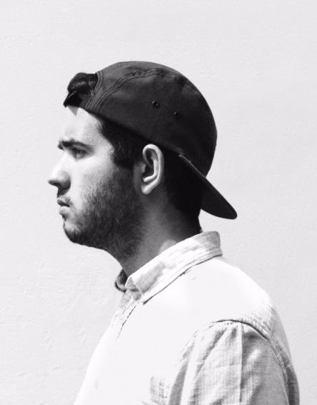
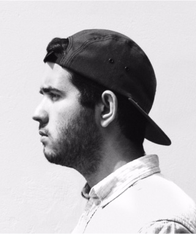

Benjamin
Dos Santos
I’m a french UI & UX Designer based in Belgium.
I design minimal, clear and beautiful solutions.
Élaboré avec amour en belgique.
I’m a french UI & UX Designer based in Belgium.
I design minimal, clear and beautiful solutions.
Élaboré avec amour en belgique.